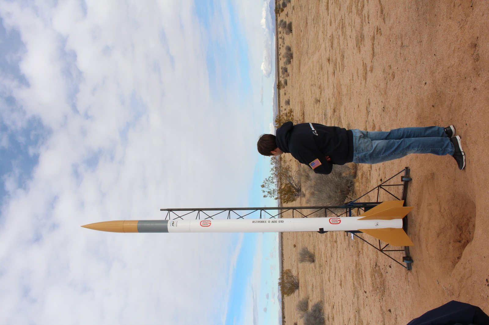
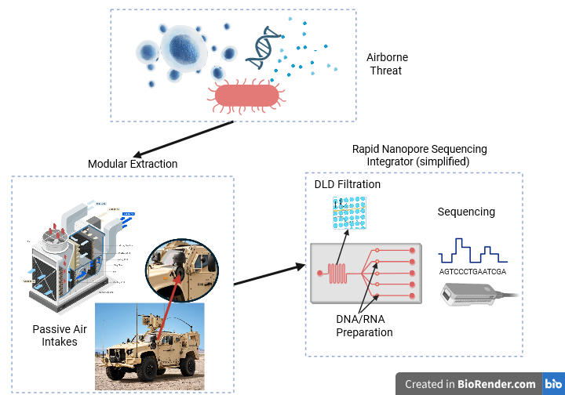

Military & Public Health Detection
Agencies can make rapid, informed decisions regarding the safety of the masses.
Biotech defense startup
DNA-enabled detection systems for biosecurity, defense readiness, and critical infrastructure protection.
About
Integral Detection Technology LLC is a biotech defense startup focused on improving how organizations identify and respond to biological material in the field, in secure facilities, and across critical operations.
The company brings molecular biology and practical system design together so decision makers can move from uncertainty to informed action with greater speed and confidence.
Agencies can make rapid, informed decisions regarding the safety of the masses.
Ecological monitoring of waterways improves upon current eDNA collection methods.
Actionable molecular insight for teams working under time-sensitive conditions.
Our Founders

Ph.D Candidate, Mechanical Engineering - University of Utah
B.S, Mechanical Engineering - California State University, Chico
M.S Candidate, Biology - Eastern Washington University
B.S, Environmental Science - California State University, Chico
Technology
IDT is developing technology centered on the specificity of DNA recognition and the realities of deployment beyond a traditional laboratory. The goal is to support biological detection with tools that are fast to interpret, defensible in their results, and adaptable to mission needs.

Molecular approaches designed to distinguish biological signatures with precision and reduce ambiguity during screening.
Sample-to-answer thinking that connects preparation, detection, interpretation, and reporting into a clear operational sequence.
Systems shaped for the constraints of defense, security, and critical infrastructure settings.
Contact
For partnerships, research collaborations, government programs, or procurement conversations, reach out to the IDT team.
contact@integraldetectiontechnology.com